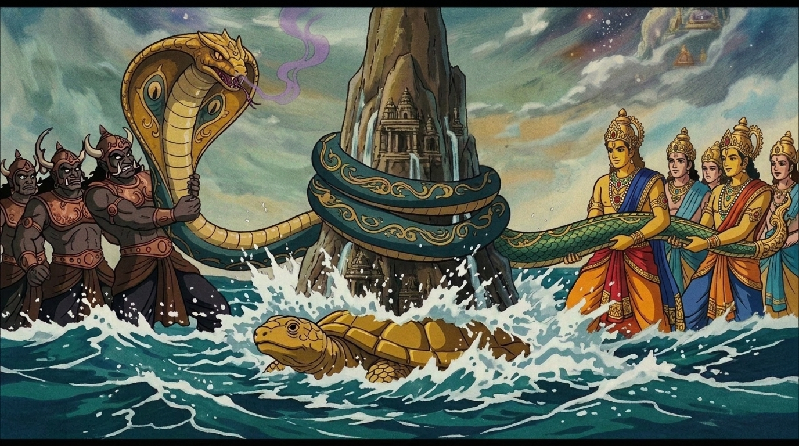
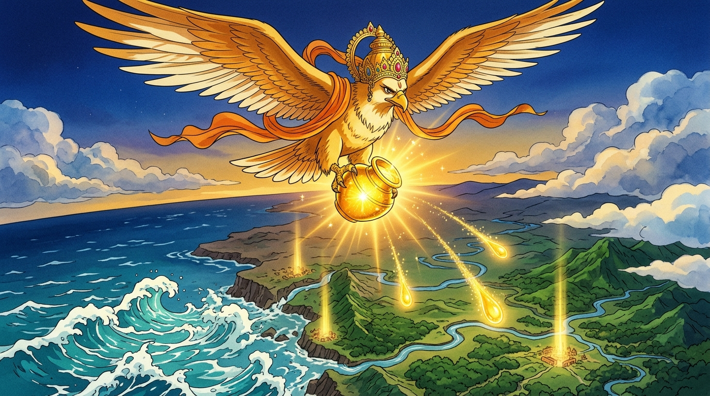

Before time began, the cosmic harmony fractured. Devas and Asuras forged an unprecedented pact to churn the Milky Ocean for the divine nectar of immortality.
सृष्टीच्या प्रारंभी देव आणि असुरांनी अमरत्वाच्या अमृताप्राप्तीसाठी क्षीरसागराचे महामंथन करण्याचा ऐतिहासिक करार केला.

